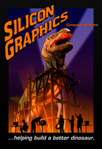
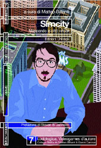

| Selected Publications By Julian Bleecker | |||
|  | The Reality Effect of Technoscience. | Ph.D. Dissertation on investigates the social, cultural and political meaning of three technology-based popular culture artifacts: Virtual Reality technology; film-based special effects as seen in the science-fiction film Jurassic Park, and; the simulation game SimCity2000. | |
|  | SimCity2000. Urban Crisis: Past, Present and Virtual. | Published in SimCity. Mapping the Virtual Cities, Matteo Bittanti, ed. 2004; and The SR Review, 1995. | |